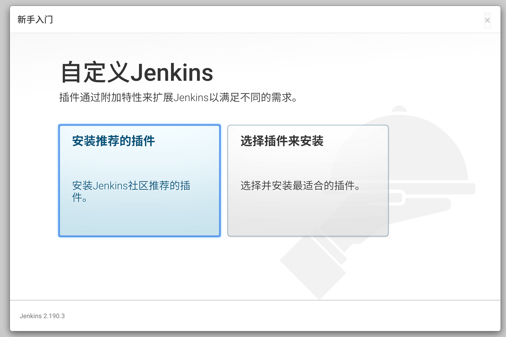
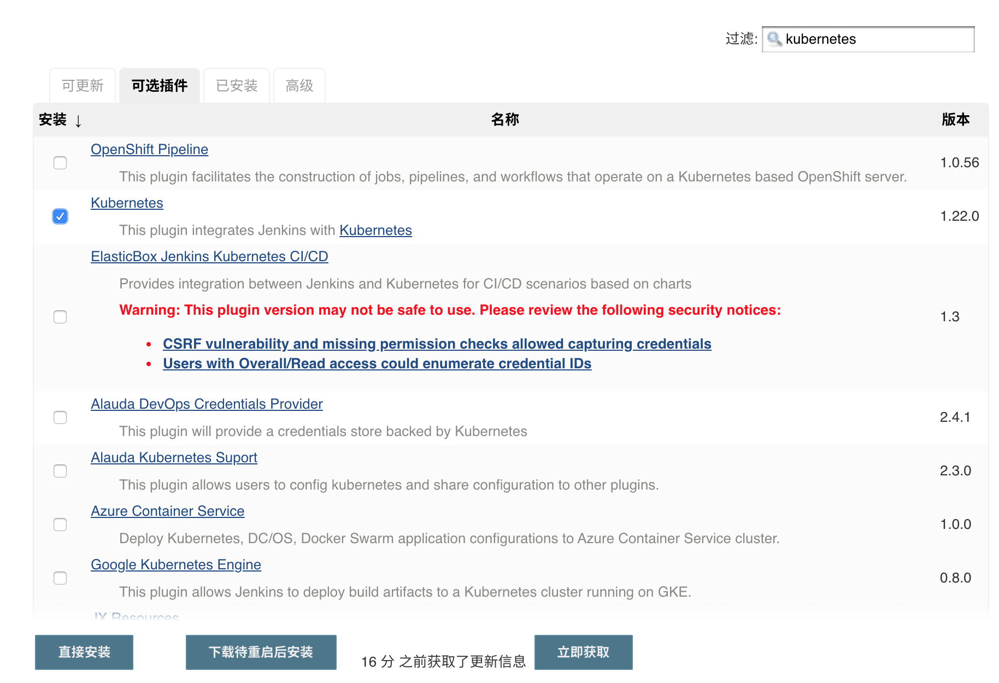
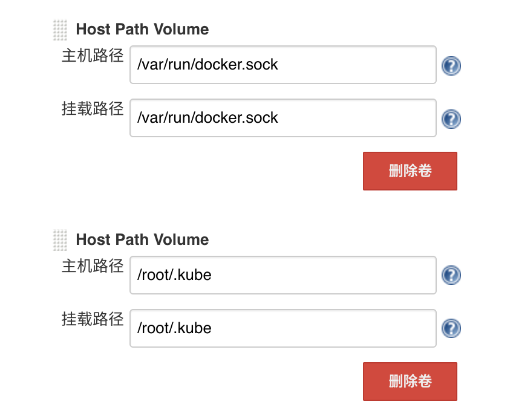
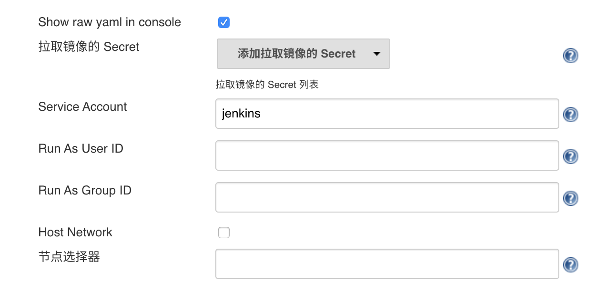

Jenins
Jenkins¶
提到基于 Kubernete 的CI/CD，可以使用的工具有很多，比如 Jenkins、Gitlab CI 以及新兴的 drone 之类的，我们这里会使用大家最为熟悉的 Jenkins 来做 CI/CD 的工具。
安装¶
既然要基于 Kubernetes 来做 CI/CD，我们这里最好还是将 Jenkins 安装到 Kubernetes 集群当中，安装的方式也很多，我们这里仍然还是使用手动的方式，这样可以了解更多细节，对应的资源清单文件如下所示：
apiVersion: v1
kind: PersistentVolume
metadata:
name: jenkins-pv
spec:
storageClassName: local # Local PV
capacity:
storage: 2Gi
volumeMode: Filesystem
accessModes:
- ReadWriteOnce
local:
path: /data/k8s/jenkins
nodeAffinity:
required:
nodeSelectorTerms:
- matchExpressions:
- key: kubernetes.io/hostname
operator: In
values:
- ydzs-node6
---
apiVersion: v1
kind: PersistentVolumeClaim
metadata:
name: jenkins-pvc
namespace: kube-ops
spec:
storageClassName: local
accessModes:
- ReadWriteOnce
resources:
requests:
storage: 2Gi
---
apiVersion: v1
kind: ServiceAccount
metadata:
name: jenkins
namespace: kube-ops
---
kind: ClusterRole
apiVersion: rbac.authorization.k8s.io/v1beta1
metadata:
name: jenkins
rules:
- apiGroups: ["extensions", "apps"]
resources: ["deployments", "ingresses"]
verbs: ["create", "delete", "get", "list", "watch", "patch", "update"]
- apiGroups: [""]
resources: ["services"]
verbs: ["create", "delete", "get", "list", "watch", "patch", "update"]
- apiGroups: [""]
resources: ["pods"]
verbs: ["create","delete","get","list","patch","update","watch"]
- apiGroups: [""]
resources: ["pods/exec"]
verbs: ["create","delete","get","list","patch","update","watch"]
- apiGroups: [""]
resources: ["pods/log", "events"]
verbs: ["get","list","watch"]
- apiGroups: [""]
resources: ["secrets"]
verbs: ["get"]
---
apiVersion: rbac.authorization.k8s.io/v1beta1
kind: ClusterRoleBinding
metadata:
name: jenkins
namespace: kube-ops
roleRef:
apiGroup: rbac.authorization.k8s.io
kind: ClusterRole
name: jenkins
subjects:
- kind: ServiceAccount
name: jenkins
namespace: kube-ops
---
apiVersion: v1
kind: ConfigMap
metadata:
name: jenkins-mirror-conf
namespace: kube-ops
data:
nginx.conf: |
user nginx;
worker_processes 3;
error_log /dev/stderr;
events {
worker_connections 10240;
}
http {
log_format main '$remote_addr - $remote_user [$time_local] "$request" '
'$status $body_bytes_sent "$http_referer" '
'"$http_user_agent" "$http_x_forwarded_for" $request_time';
access_log /dev/stdout main;
server {
listen 80;
server_name mirrors.jenkins-ci.org;
location / {
proxy_redirect off;
proxy_pass https://mirrors.tuna.tsinghua.edu.cn/jenkins/;
proxy_set_header X-Real-IP $remote_addr;
proxy_set_header X-Forwarded-For $proxy_add_x_forwarded_for;
proxy_set_header Accept-Encoding "";
proxy_set_header Accept-Language "zh-CN";
}
index index.html index.htm index.php;
location ~ /\. {
deny all;
}
}
}
---
apiVersion: apps/v1
kind: Deployment
metadata:
name: jenkins
namespace: kube-ops
spec:
selector:
matchLabels:
app: jenkins
template:
metadata:
labels:
app: jenkins
spec:
serviceAccount: jenkins
hostAliases:
- ip: "11"
hostnames:
- "mirrors.jenkins-ci.org"
initContainers:
- name: fix-permissions
image: busybox
command: ["sh", "-c", "chown -R 1000:1000 /var/jenkins_home"]
securityContext:
privileged: true
volumeMounts:
- name: jenkinshome
mountPath: /var/jenkins_home
containers:
- name: mirror
image: nginx:9
ports:
- containerPort: 80
volumeMounts:
- mountPath: /etc/nginx
readOnly: true
name: nginx-conf
- name: jenkins
image: jenkins/jenkins:lts
imagePullPolicy: IfNotPresent
ports:
- containerPort: 8080
name: web
protocol: TCP
- containerPort: 50000
name: agent
protocol: TCP
resources:
limits:
cpu: 1500m
memory: 2048Mi
requests:
cpu: 1500m
memory: 2048Mi
readinessProbe:
httpGet:
path: /login
port: 8080
initialDelaySeconds: 60
timeoutSeconds: 5
failureThreshold: 12
volumeMounts:
- name: jenkinshome
mountPath: /var/jenkins_home
volumes:
- name: jenkinshome
persistentVolumeClaim:
claimName: jenkins-pvc
- name: nginx-conf
configMap:
name: jenkins-mirror-conf
items:
- key: nginx.conf
path: nginx.conf
---
apiVersion: v1
kind: Service
metadata:
name: jenkins
namespace: kube-ops
labels:
app: jenkins
spec:
selector:
app: jenkins
ports:
- name: web
port: 8080
targetPort: web
- name: agent
port: 50000
targetPort: agent
# ---
# apiVersion: extensions/v1beta1
# kind: Ingress
# metadata:
# name: jenkins
# namespace: kube-ops
# spec:
# rules:
# - host: jenkins.k8s.local
# http:
# paths:
# - backend:
# serviceName: jenkins
# servicePort: web
---
apiVersion: traefik.containo.us/v1alpha1
kind: IngressRoute
metadata:
name: jenkins
namespace: kube-ops
spec:
entryPoints:
- web
routes:
- kind: Rule
match: Host(`jenkins.k8s.local`)
services:
- name: jenkins
port: 8080
我们这里使用一个名为
jenkins/jenkins:lts的镜像，这是 jenkins 官方的 Docker 镜像，然后也有一些环境变量，当然我们也可以根据自己的需求来定制一个镜像，比如我们可以将一些插件打包在自定义的镜像当中，可以参考文档：https://github.com/jenkinsci/docker，我们这里使用默认的官方镜像就行，另外一个还需要注意的数据的持久化，将容器的/var/jenkins_home目录持久化即可，同样为了性能考虑，我们这里使用 Local PV，将 Pod 调度到固定的节点上。由于我们这里使用的镜像内部运行的用户
uid=1000，所以我们这里挂载出来后会出现权限问题，为解决这个问题，我们同样还是用一个简单的initContainer来修改下我们挂载的数据目录。另外我们这里还需要使用到一个拥有相关权限的
serviceAccount：jenkins
，我们这里只是给 jenkins 赋予了一些必要的权限，当然如果你对 serviceAccount 的权限不是很熟悉的话，我们给这个 sa 绑定一个 cluster-admin 的集群角色权限也是可以的，当然这样具有一定的安全风险。
除此之外，这里我们还添加了一个额外的名为
mirror的容器，添加这个容器的目的是使用一个 nginx 容器来反向代理 Jenkins 插件的官方源到清华大学的源上面，因为官方源实在是太慢了，我们这里将官方的镜像地址
mirrors.jenkins-ci.org
通过 hostAlias 映射到了 127.0.0.1 这个地址上，而这个地址恰好就是 mirror 这个 nginx 容器，我们通过一个 ConfigMap 来配置 Nginx，将
mirros.jenkins-ci.org
反向代理到了
proxy_pass https://mirrors.tuna.tsinghua.edu.cn/jenkins/;
，这样当我们在 Jenkins 中要下载插件的时候实际上会被代理到清华的源上面去，这样就大大加快了插件下载的速度。
最后就是通过 IngressRoute 来暴露我们的服务，这个比较简单。
我们直接来创建 jenkins 的资源清单即可：
$ kubectl apply -f jenkins.yaml
$ kubectl get pods -n kube-ops -l app=jenkins
NAME READY STATUS RESTARTS AGE
jenkins-5b957d4b8f-t22gp 2/2 Running 0 18m
$ kubectl logs -f jenkins-5b957d4b8f-t22gp jenkins -n kube-ops
......
2019-12-16 13:26:756+0000 [id=39] INFO hudson.model.AsyncPeriodicWork$1#run: Finished Download metadata. 28,073 ms
2019-12-16 13:26:760+0000 [id=26] INFO jenkins.InitReactorRunner$1#onAttained: Completed initialization
2019-12-16 13:26:863+0000 [id=19] INFO hudson.WebAppMain$3#run: Jenkins is fully up and running
看到上面的
run: Jenkins is fully up and running
信息就证明我们的 Jenkins 应用以前启动起来了。
然后我们可以通过 IngressRoute 中定义的域名
jenkins.k8s.local(需要做 DNS 解析或者在本地/etc/hosts中添加映射)来访问 jenkins 服务：
然后可以执行下面的命令获取解锁的管理员密码：

$ kubectl exec -it jenkins-5b957d4b8f-t22gp -c jenkins -n kube-ops -- cat /var/jenkins_home/secrets/initialAdminPassword
35b083de1d25409eaef57255e0da481a # jenkins启动日志里面也有
然后选择安装推荐的插件即可，由于我们已经做了插件的反向代理了，所以理论上安装速度会比较快

安装完成后添加管理员帐号即可进入到 jenkins 主界面：

架构¶
Jenkins 安装完成了，接下来我们不用急着就去使用，我们要了解下在 Kubernetes 环境下面使用 Jenkins 有什么好处。
我们知道持续构建与发布是我们日常工作中必不可少的一个步骤，目前大多公司都采用 Jenkins 集群来搭建符合需求的 CI/CD 流程，然而传统的 Jenkins Slave 一主多从方式会存在一些痛点，比如：
- 主 Master 发生单点故障时，整个流程都不可用了
- 每个 Slave 的配置环境不一样，来完成不同语言的编译打包等操作，但是这些差异化的配置导致管理起来非常不方便，维护起来也是比较费劲
- 资源分配不均衡，有的 Slave 要运行的 job 出现排队等待，而有的 Slave 处于空闲状态
- 资源有浪费，每台 Slave 可能是物理机或者虚拟机，当 Slave 处于空闲状态时，也不会完全释放掉资源。
正因为上面的这些种种痛点，我们渴望一种更高效更可靠的方式来完成这个 CI/CD 流程，而 Docker 虚拟化容器技术能很好的解决这个痛点，又特别是在 Kubernetes 集群环境下面能够更好来解决上面的问题，下图是基于 Kubernetes 搭建 Jenkins 集群的简单示意图：
从图上可以看到
Jenkins Master和Jenkins Slave以 Pod 形式运行在 Kubernetes 集群的 Node 上，Master 运行在其中一个节点，并且将其配置数据存储到一个 Volume 上去，Slave 运行在各个节点上，并且它不是一直处于运行状态，它会按照需求动态的创建并自动删除。这种方式的工作流程大致为：当 Jenkins Master 接受到 Build 请求时，会根据配置的 Label 动态创建一个运行在 Pod 中的 Jenkins Slave 并注册到 Master 上，当运行完 Job 后，这个 Slave 会被注销并且这个 Pod 也会自动删除，恢复到最初状态。
那么我们使用这种方式带来了哪些好处呢？

服务高可用，当 Jenkins Master 出现故障时，Kubernetes 会自动创建一个新的 Jenkins Master 容器，并且将 Volume 分配给新创建的容器，保证数据不丢失，从而达到集群服务高可用。动态伸缩，合理使用资源，每次运行 Job 时，会自动创建一个 Jenkins Slave，Job 完成后，Slave 自动注销并删除容器，资源自动释放，而且 Kubernetes 会根据每个资源的使用情况，动态分配 Slave 到空闲的节点上创建，降低出现因某节点资源利用率高，还排队等待在该节点的情况。扩展性好，当 Kubernetes 集群的资源严重不足而导致 Job 排队等待时，可以很容易的添加一个 Kubernetes Node 到集群中，从而实现扩展。 是不是以前我们面临的种种问题在 Kubernetes 集群环境下面是不是都没有了啊？看上去非常完美。
配置¶
接下来我们就需要来配置 Jenkins，让他能够动态的生成 Slave 的 Pod。
第1步. 我们需要安装 kubernetes 插件， 点击 Manage Jenkins -> Manage Plugins -> Available -> Kubernetes 勾选安装即可。

第2步. 安装完毕后，点击 Manage Jenkins —> Configure System —> (拖到最下方)，如果有
Add a new cloud—> 选择 Kubernetes，然后填写 Kubernetes 和 Jenkins 配置信息即可，但是最新版本的 Kubernetes 插件将配置单独放置到了一个页面中：
这个时候需要点击

a separate configuration page
这个链接，跳转到 Configure Cloud 页面：
在该页面我们可以点击
Add a new cloud-> 选择 Kubernetes，然后填写 Kubernetes 和 Jenkins 配置信息：
注意 namespace，我们这里填 kube-ops，然后点击
Test Connection，如果出现


Connection test successful
的提示信息证明 Jenkins 已经可以和 Kubernetes 系统正常通信了，然后下方的 Jenkins URL 地址：
http://jenkins.kube-ops.svc.cluster.local:8080
，这里的格式为：
服务名.namespace.svc.cluster.local:8080
，根据上面创建的 jenkins 的服务名填写。
第3步. 配置
Pod Template，其实就是配置 Jenkins Slave 运行的 Pod 模板，命名空间我们同样是用 kube-ops，Labels 这里也非常重要，对于后面执行 Job 的时候需要用到该值，然后我们这里使用的是cnych/jenkins:jnlp6这个镜像，这个镜像是在官方的 jnlp 镜像基础上定制的，加入了 docker、kubectl 等一些实用的工具。
注意
容器的名称必须是 jnlp，这是默认拉起的容器，另外需要将
Command to run和

Arguments to pass to the command
的值都删除掉，否则会失败。
然后我们这里需要在下面挂载两个主机目录，一个是
/var/run/docker.sock，该文件是用于 Pod 中的容器能够共享宿主机的 Docker，这就是大家说的docker in docker的方式，Docker 二进制文件已经打包到上面的镜像中了，另外一个目录下/root/.kube目录，我们将这个目录挂载到容器的/root/.kube目录下面这是为了让我们能够在 Pod 的容器中能够使用kubectl工具来访问我们的 Kubernetes 集群，方便我们后面在Slave Pod部署 Kubernetes 应用。
另外如果在配置了后运行 Slave Pod 的时候出现了权限问题，这是因为 Jenkins Slave Pod 中没有配置权限，所以需要配置上 ServiceAccount，在 Slave Pod 配置的地方点击下面的高级，添加上对应的 ServiceAccount 即可：

到这里我们的 Kubernetes 插件就算配置完成了。
测试¶
Kubernetes 插件的配置工作完成了，接下来我们就来添加一个 Job 任务，看是否能够在 Slave Pod 中执行，任务执行完成后看 Pod 是否会被销毁。
在 Jenkins 首页点击
create new jobs，创建一个测试的任务，输入任务名称，然后我们选择Freestyle project类型的任务，注意在下面的Label Expression这里要填入ydzs-jnlp，就是前面我们配置的 Slave Pod 中的 Label，这两个地方必须保持一致：
然后往下拉，在 Build 区域选择
Execute shell
然后输入我们测试命令


echo "测试 Kubernetes 动态生成 jenkins slave"
echo "docker in docker"
docker info
echo "kubectl"
kubectl get pods
最后点击保存
现在我们直接在页面点击左侧的
Build now触发构建即可，然后观察 Kubernetes 集群中 Pod 的变化：

$ kubectl get pods -n kube-ops
NAME READY STATUS RESTARTS AGE
jenkins-68ccff445c-dk24f 1/1 Running 0 12h
jnlp-1g893 0/1 ContainerCreating 0 83s
我们可以看到在我们点击立刻构建的时候可以看到一个新的 Pod：jnlp-1g893 被创建了，这就是我们的 Jenkins Slave。任务执行完成后我们可以看到任务信息，比如我们这里是 花费了 21s 时间在 jnlp-1g893 这个 Slave上面
到这里证明我们的任务已经构建完成，然后这个时候我们再去集群查看我们的 Pod 列表，发现 kube-ops 这个 namespace 下面已经没有之前的 Slave 这个 Pod 了。

$ kubectl get pods -n kube-ops
NAME READY STATUS RESTARTS AGE
jenkins-68ccff445c-dk24f 1/1 Running 0 12h
到这里我们就完成了使用 Kubernetes 动态生成 Jenkins Slave 的方法。